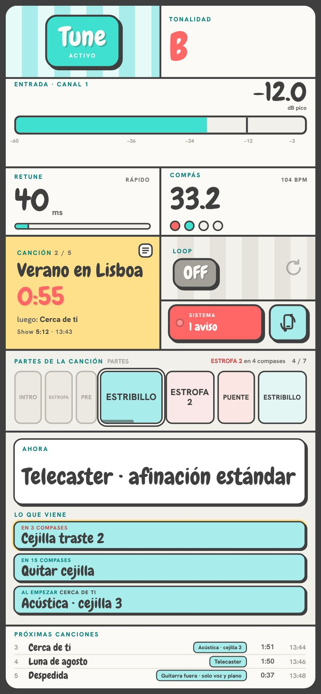

SEMPP MIDI CONTROL
Manual · version 3
What it is
SEMPP MIDI CONTROL controls Auto-Tune in your Apollo's UAD Console from Ableton Live: key, scale, retune and bypass, clip by clip. It also reads your Ableton set and shows you, on the Mac and on the iPad, the song that is playing, its sections, the text of your MIDI clips, the setlist and how much time is left.
You need
- A Mac running macOS 10.15 or later (Intel or Apple Silicon).
- An Apollo with UAD Console and Auto-Tune loaded on a channel.
- Ableton Live 11 or 12.
- Optional: one or more iPads on the same network as the Mac.
Moving the window: click and drag from anywhere in the plugin that is not a button or a control (backgrounds, cards, text, bars). A single click moves nothing and text is never selected. The iPad addresses (Settings → iPad) are copied with one click. NEW
Installation
- Open the SEMPP installer (.dmg file) and double-click Install SEMPP MIDI CONTROL. If it is a test version, the installer shows a BETA label.
- If macOS says it cannot open it because it is from an unidentified developer: System Settings → Privacy & Security → Open Anyway.
- Click Install and type your Mac password.
- When it finishes, SEMPP opens together with the setup assistant, which checks step by step that everything works. You can skip it and open it again from Settings → General → Setup assistant.
Setting up Ableton
1 · Control surface and MIDI output
Ableton → Preferences → Link, Tempo & MIDI. Two things on the same screen:
2 · How to organise the set
In Settings → Ableton you choose which tracks are read and which one holds the song sections.
TUNE tab
 123
45613
789
101211
123
45613
789
101211- 1The popsicle: click it to engage or bypass Auto-Tune. With Auto-Tune active it shows its flavour; in bypass it turns almost grey and the stripes turn pink. The round button at the top left opens a strip of flavours (Jelly, Mint, Almond, Bonbon, Strawberry, Lemon, Watermelon and Tricolour): hover to try one on, click to keep it. It only changes the look. NEW
- 2Key: click it to choose on a piano, or drag, use the scroll wheel or the arrow keys. The CC button assigns a MIDI control to it. NEW
- 3Scale: click it to choose from every scale in your Auto-Tune.
- 4Dials: Retune Speed, Humanize, Flex-Tune and Natural Vibrato.
- 5Bottom panel, with four buttons: Activity (the latest events: MIDI, iPads, Ableton and buttons), Presets (see presets), iPads (who is connected right now, from which view and device, and whether a PIN is set and controls are active) or MIDI channels (each channel can control a different Auto-Tune or be forwarded to IAC buses: lights, visuals…). It remembers your last choice. NEW
- 6Tabs: TUNE, ABLETON and SETLIST.
- 7Live view: opens or closes the floating window.
- 8Lock: instantly locks the controls on every iPad.
- 9Settings: bypass, controls, text, MIDI, iPad and general.
- 10Status: three dots (Console, MIDI and Ableton). Green = fine. If one fails, its name appears in red; hover for details and click to open Settings. NEW
- 12Logo: opens the website, sempp.miguelsempere.es. NEW
- 13Hints (?): shows or hides every usage hint («Click to choose · or drag», «Click to toggle», the setlist drag handles…). Once you know your way around, turn it off for a cleaner screen; it is remembered. NEW
- 11Input meter: the signal entering the Console channel that holds Auto-Tune, before the fader and before Auto-Tune. NEW
Input meter NEW
It measures what reaches the UAD Console channel that has Auto-Tune (for example channel 1 with the vocal mic), as it comes in: before the fader and before Auto-Tune. It ranges from −60 to 0 dB and the number is the peak of the last 2 seconds.
| Colour | What it means |
|---|---|
| Green | Good. Below −12 dB. |
| Yellow | Hot. From −12 to −3 dB. |
| Red | At the limit. Above −3 dB: lower the preamp gain. |
| CLIP | The signal has clipped. The warning stays lit (even after it stops clipping) until you click it, so you never miss it. |
| NO SIGNAL | Nothing has come in for 5 seconds while Ableton is playing: check the mic, the cable or the preamp. |
It is also on the iPad, in the technician view. If there is no Auto-Tune in Console, the meter is hidden.
Choosing key and scale NEW


Click the key card and a piano appears: press a key and Auto-Tune changes instantly. The scale card shows every scale in your Auto-Tune, with its name as it appears in Auto-Tune.
The lists of keys and scales are read automatically from your Auto-Tune, without pressing anything: as soon as Ableton is stopped and Auto-Tune is bypassed or has no vocal coming in (while reading, Auto-Tune steps through every key or scale, so this way nothing is heard). If you open the picker and the list is not there yet, it is read right then with Ableton stopped; if Ableton is playing, it is read when you stop. If Ableton starts or MIDI arrives while reading, everything is restored and it tries again later. It is remembered for good and, if you load a different Auto-Tune model, the lists are read again automatically. Read again is still in the picker in case you need it.
ABLETON tab
What you need to watch during the show, in large type:
 123
456
123
456- 1Song that is playing, its number in the setlist, the tempo and the next one.
- 2Left: the song countdown; it blinks during the last 10 seconds.
- 3Show: what is left of the concert and the time it ends.
- 4Current time.
- 5Song sections: grey = already played; outlined = the one playing. Click one to go to it (see how it comes in).
- 6Text from the chosen tracks, as large as fits, with what comes next.
Bottom bar and transport
Always visible, in TUNE, ABLETON and SETLIST. The Click and Ref buttons only appear if you enable them (see how):
 12345678910
12345678910- 1Previous song in the setlist (if the current one has already moved on, it goes back to its start, as in Ableton).
- 2Play / Stop.
- 3Next song in the setlist.
- 4Ableton Loop: grey and OFF when disabled; turquoise, ON and with a spinning arrow when enabled.
- 5Click SOLO: like the solo button on a desk. Grey, off: press it to leave only the click playing. Yellow, active: press it to release the solo. NEW
- 6Ref: mutes or restores the Artist Ref track (coral, MUTE). NEW
- 7Song that is playing, with the icon of what it will do when it ends.
- 8Time left in the song.
- 9Bar and beat, live.
- 10Coming up: the next section and in how many bars it starts, and the next song with the time remaining.
Reading the bar counter
Play, Stop and cueing a song NEW
SETLIST tab
 123
4567
8910
123
4567
8910- 1Reorder: drag from the dots.
- 2When this song ends: Follow, Chain or Stop.
- 3Eye: removes it from the show; previous/next, timings and chaining skip it.
- 4Double-click a song to cue its start (while playing, it comes in on time).
- 5Show left and full show, with the time it ends. With hours (1:09:02) the figure adjusts so it is always shown in full.
- 6When it ends, all songs: the same mode for the whole setlist in one go.
- 7Back to Ableton's order (the Arrangement order).
- 8(i): instructions for the setlist and the end-of-song modes. NEW
- 10View: list, compact (in columns, for long setlists) or cards, as in the Finder. It is remembered. NEW
- 9Sections of the song that is playing, as in ABLETON: click one to go to it (while playing it comes in on time; when stopped it is cued). At the top, how many bars are left until the next one. NEW

What happens when each song ends
Jumping to a section
From the ABLETON tab or from the iPad you can jump to any section (CHORUS, BRIDGE…):
A section works like a marker. NEW It behaves like Ableton's space bar: after going to a section, when you stop, playback stays where you stopped and the next Play starts at that section. Play, Stop and Play again always start there. If you choose it with Ableton stopped, playback is cued at the section, ready for your Play. It stays that way until you choose another section or song, or until you move playback yourself in Ableton.
Click and Artist Ref NEW
Two buttons for rehearsal and the show: CLICK leaves only the click track playing (it solos it) and REF mutes or restores the artist's reference vocal track (mute). They are on the plugin's bottom bar and on the musical director's iPad.
Enabling them and choosing the tracks
 1234
1234- 1Settings → Ableton → Click and Artist Ref: turns the buttons on.
- 2Click track: SEMPP reads the tracks in the set (audio and MIDI); choose the click.
- 3Release the solo when going to a section (on by default).
- 4Artist Ref track: the reference vocal.
Rehearsing with the click soloed and jumping to a section
The buttons change the moment you press them and are confirmed by what Ableton reports. If you change the solo or mute of those tracks by hand in Ableton, the buttons follow. If a track is not in the set (for example, it has been renamed), its button turns grey with «?».
iPad
- Connect the Mac to the rack router (ideally by cable) and the iPad to that router's Wi-Fi. No internet needed.
- In Settings → iPad, scan the code for the view you want with the iPad camera.
- In Chrome or Safari: share → Add to Home Screen, to open it full screen like an app.
- Tap the screen once when it opens so it does not go to sleep (and set Auto-Lock: Never on the iPad).
Musical director view
 123
4567
8
123
4567
8- 1Tune: press and hold to engage or bypass it.
- 2Bar and beat, as in the plugin. NEW
- 3Song, countdown, next song and show. Tap it to open the setlist.
- 4Transport: previous, Play/Stop and next.
- 5Ableton Loop.
- 6Sections: hold one to go to it. Each section has its own colour (light, so the text is always readable); the one playing fills up completely. At the top right, the next section and how many bars are left (in all three views). NEW
- 7Text from your tracks.
- 8Click (solo) and Artist Ref (mute), if enabled. NEW
Setlist on the iPad NEW
 123
45
123
45- 1Tap the song (or hold it, depending on the touch mode): it is cued at its start without playing. If something is already playing, it comes in on time.
- 2▶: with Ableton stopped, starts that song right away; while playing, it comes in on time just like tapping it. Always available.
- 3The song playing now, in turquoise; the next one, with a yellow border.
- 4■ on the song playing (yellow, blinking): stops Ableton. NEW
- 5Pin: in yellow («Pinned»), the setlist does not close by itself when you choose or start a song. Each iPad remembers it. NEW
The list scrolls smoothly with your finger, even when it is long.
Long names (songs, sections, keys and text) are always shown in full, on the iPad, in the plugin and in the live view: the type adjusts to fit and a word is never split in half.
Technician view NEW
 123
456
78
123
456
78- 1Input meter of the Console channel with Auto-Tune: green, yellow from −12 dB, red from −3 dB, with the peak of the last 2 seconds. CLIP stays lit until you tap it; NO SIGNAL if nothing comes in while Ableton plays.
- 2Auto-Tune key.
- 3Song sections, large, with the bars left until the next one.
- 4Now: the technician note that applies right now, in large white type.
- 5Coming up: the next three notes, in light blue and smaller, with the bars remaining. The one approaching blinks.
- 6Upcoming songs in the show (up to 4): their first note, duration and estimated start time.
- 7System: system status, connections and alarms, folded away. Tap it to open and × to close. If there is a problem, the button turns coral with the number of alerts.
- 8Vertical: switches to the vertical view (and back). Each device remembers it; the first time, a screen taller than it is wide starts in vertical.
Tune presets NEW
A preset stores the key, the scale and the four Auto-Tune dials (Retune Speed, Humanize, Flex-Tune and Natural Vibrato) exactly as they are. Bypass is not stored: your Program Changes still control it. They live in the TUNE bottom panel → Presets.
- Save current creates a new preset from what is set now; you give it a name.
- Click a card = load that preset. The loaded one is shown in mint; if you then change something, it says CHANGED.
- ⋯ on each card: save the current settings into that preset, rename, Songs…, move it earlier or later, and delete (asks for a second click).
- Songs… (optional): when that song is reached, playing or cued, its preset loads. Each song can have one.
- Via MIDI: in Settings → Tune → Presets, choose a CC. Send it from Ableton through the SEMPP MIDI CONTROL output on a channel that controls Auto-Tune: the value is the preset number (the one on its card; 0 does nothing).
- They are stored inside SEMPP, without files. To move them to another Mac or keep a backup: Settings → Tune → Presets → Export (creates a file in Downloads) and Import (adds them to the ones you already have).
Show clock NEW
Counts show time (h:mm:ss) from the start of the concert. In Settings → Ableton → Show clock, choose the marker the show starts with (for example, the intro). When that marker starts playing, the clock starts by itself and appears in the plugin's bottom bar (IN SHOW) and on the song card of the director and technician iPads.
- It keeps counting even if you stop Ableton between songs; if you close and reopen SEMPP, it carries on where it was.
- If during the first 5 minutes you launch the start marker again from the top (a false start), it starts over. Pressing Play halfway through that song after a pause does not affect it.
- Click IN SHOW on the bar (or go to Settings) to Reset or Start now by hand. No need the next day: a clock running for more than 8 hours is no longer shown and the marker starts it again.
Technician notes NEW
A MIDI track in your set with one clip per cue, named after the cue: «Telecaster», «Capo 2», «Switch to acoustic», «Tune to D»… Place them in the Arrangement where each change happens. Choose the track in Settings → Ableton → Technician notes. Only the technician iPad sees it: not the plugin, the live view, the director or the band.
- Now is the last note of the song that has already started: it stays in view until the next one (the guitar in use, the capo in place).
- Coming up continues with the notes of the following setlist songs («At the start of Close to you»), so the guitar can be prepared in time.
- When the number of bars you set in Warn before (4 by default) is reached, the approaching note is highlighted and its count blinks.
After updating, restart Ableton: with the previous script only the notes of the song playing are shown.
Vertical view NEW

In all three views (director, technician and band), for a phone, an iPad held upright or a narrow window on the computer: everything stacked, full width, in the same order. In the technician view it is switched with the Vertical button next to System; in the director and band views, with the rotating-phone icon on the song card next to the setlist icon. Each device remembers it.
To see an iPad view on the Mac itself, open http://127.0.0.1:47100/ipad?v=tec (or v=dm, v=banda) in the browser. The address with the Mac's name shown in Settings → iPad also works.
Views
| View | For whom |
|---|---|
| Musical director | Everything: tune, bar, song and timings, sections, text, transport, loop, Click and Artist Ref. |
| Technician | Vocal input meter, key, song sections, technician notes, upcoming songs and system status (folded into the System button); with tune, bar, loop and setlist. Also in vertical. |
| Band | Song and countdown in large type, bar, sections, text and loop. View-only by default. |
Access PIN NEW


Without a PIN, anyone on the same Wi-Fi can open the views. To lock them, go to Settings → iPad → Access PIN, type a PIN of 4 to 6 digits (or click Generate), click Save PIN and turn on Ask for a PIN to enter from an iPad.
Each iPad asks for it only once on a numeric keypad and remembers it. If you change the PIN, every connected iPad goes back to the keypad and the new one must be entered. After 5 failed attempts, that iPad waits 60 seconds. The plugin and the Mac's live view never ask for it. In the TUNE tab, the iPads panel tells you who is in.
Touch controls
In Settings → iPad you choose the mode: Press and hold (half a second, avoids accidental touches), Single tap (instant) or Locked. The lock on the top bar locks every iPad at once. You also choose what each view can control: only the permissions that view can use are offered (the setlist ▶ needs «Choose song» and «Play / Stop»).
When you tap, the button responds instantly (it shrinks slightly and changes state) without waiting for Console or Ableton; if the command does not get through, it goes back and warns you. Anything a view cannot touch looks flat, without a shadow: it is view-only.
Live view
The screen button on the top bar opens a floating strip that is always in front (even over full-screen Ableton):
 123
456
78
123
456
78- 1Tune active or bypassed.
- 2Key.
- 3Scale.
- 4Retune in milliseconds.
- 5Bar and beat, with the tempo. NEW
- 6Loop, with the arrow spinning when active. NEW
- 7Marker (song) and what comes next.
- 8Text from your tracks (optional panel).
Click-through NEW
Window settings
Click (or right-click) the gear: opacity (15 to 100 %), size, position on screen, text panel, stage mode (dark), flash on change, lock position and click-through. Without click-through, right-click works anywhere on the view and it can be dragged with any button. Opacity and click-through are also in the plugin: Settings → Views.
Settings NEW
The settings button (top right) opens a panel with six tabs, from general to specific:

| Tab | What's inside |
|---|---|
| General | Language, theme, window size (from Small to Extra large: the whole plugin larger or smaller, without moving anything; sizes that do not fit your screen are greyed out) NEW and text size; updates and launch at login; help (manual, assistant, website, send report), log, stop and uninstall. |
| Tune | Which Auto-Tune is controlled and the connection to UAD Console; bypass by CC and by Program Change; Tune presets. |
| MIDI | The SEMPP port in Ableton, other inputs and what each CC moves (with Learn). |
| Ableton | Script status, tracks whose text is read, the sections track, the Click and Artist Ref buttons, the show clock and the technician notes. |
| Views | Live view (open, click-through, opacity, text panel) and text viewer. |
| iPad | Enable the iPad, access PIN NEW, touch mode, QR codes for each view with their permissions and who is connected. |
Clicking a MIDI channel in the TUNE tab opens its own panel: which Auto-Tune it controls and which buses it forwards to.
Updates
If the Mac has internet, SEMPP looks for a new version when it opens and every 6 hours (without internet, it tries again every 10 minutes). If there is one, a window tells you: under What's new you can read the new features, improvements and fixes, and choose Update now (it will ask for your Mac password and SEMPP restarts by itself) or Later (a small notice stays at the top and the window comes back the next time you open SEMPP). Before installing, the file is checked for damage. Afterwards, restart Ableton. NEW
Troubleshooting and help
| If this happens | Try this |
|---|---|
| «No Console» | Open UAD Console with the Apollo switched on. |
| «No Auto-Tune» | Load Auto-Tune on a Console channel. In Settings → Tune you can change the plugin name it looks for. |
| The ABLETON indicator is grey | Choose SEMPP as a Control Surface and restart Ableton. |
| Auto-Tune does not react to the clips | Enable Track on the SEMPP MIDI CONTROL output and check the track's MIDI To. |
| I can't move the live view | Click-through is on: drag the gear, or hold ⌥ and drag it. |
| The iPad disconnects | Mac on cable to the router, iPad on the router's Wi-Fi (5 GHz) and away from the venue's network. |
| The setlist does not appear | Add locators to the Arrangement, one at the start of each song. |
Sending a report
Settings → General → Help → Send report. Describe what happened in one line and press the button: SEMPP gathers the logs into a .zip and prepares an email in Mail with the file attached. If you don't use Mail, press Save to Desktop and send it however you like.